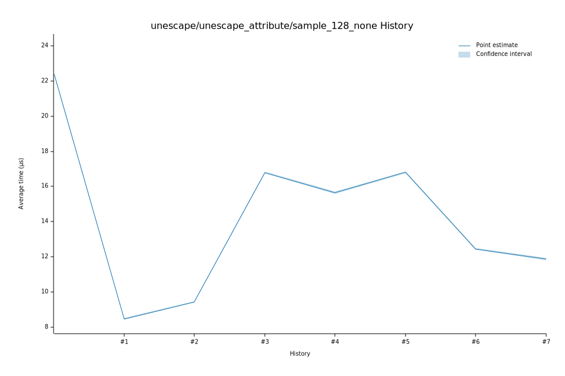

# 72023-01-31T06:04:49-08:00
|
Lower Bound |
Estimate |
Upper Bound |
| Value: |
11.79µs |
11.85µs |
11.94µs |
| Throughput: |
1366.36MiB/s |
1359.50MiB/s |
1349.21MiB/s |
| Change in Value: |
-5.2627% |
-4.5581% |
-3.7471% |
| Change in Throughput: |
+5.5550% |
+4.7757% |
+3.8930% |
No change in performance detected.
# 62023-01-21T07:26:59-08:00
|
Lower Bound |
Estimate |
Upper Bound |
| Value: |
12.39µs |
12.43µs |
12.49µs |
| Throughput: |
1300.90MiB/s |
1296.07MiB/s |
1290.57MiB/s |
| Change in Value: |
-26.567% |
-26.088% |
-25.569% |
| Change in Throughput: |
+36.178% |
+35.295% |
+34.353% |
No change in performance detected.
# 52023-01-21T06:24:43-08:00
|
Lower Bound |
Estimate |
Upper Bound |
| Value: |
16.76µs |
16.80µs |
16.85µs |
| Throughput: |
961.34MiB/s |
959.02MiB/s |
956.49MiB/s |
| Change in Value: |
+5.6494% |
+6.6777% |
+7.6031% |
| Change in Throughput: |
-5.3473% |
-6.2597% |
-7.0659% |
No change in performance detected.
# 42023-01-21T06:20:38-08:00
|
Lower Bound |
Estimate |
Upper Bound |
| Value: |
15.58µs |
15.65µs |
15.72µs |
| Throughput: |
1034.35MiB/s |
1029.84MiB/s |
1024.94MiB/s |
| Change in Value: |
-7.6925% |
-6.9340% |
-5.8692% |
| Change in Throughput: |
+8.3336% |
+7.4506% |
+6.2352% |
No change in performance detected.
# 32023-01-21T06:16:18-08:00
|
Lower Bound |
Estimate |
Upper Bound |
| Value: |
16.74µs |
16.80µs |
16.86µs |
| Throughput: |
962.33MiB/s |
959.40MiB/s |
955.96MiB/s |
| Change in Value: |
+78.597% |
+79.756% |
+80.885% |
| Change in Throughput: |
-44.008% |
-44.369% |
-44.716% |
No change in performance detected.
# 22023-01-21T06:11:45-08:00
|
Lower Bound |
Estimate |
Upper Bound |
| Value: |
9.39µs |
9.42µs |
9.45µs |
| Throughput: |
1716.40MiB/s |
1711.43MiB/s |
1705.33MiB/s |
| Change in Value: |
+10.363% |
+11.256% |
+12.027% |
| Change in Throughput: |
-9.3899% |
-10.118% |
-10.736% |
No change in performance detected.
# 12023-01-21T06:07:17-08:00
|
Lower Bound |
Estimate |
Upper Bound |
| Value: |
8.44µs |
8.47µs |
8.51µs |
| Throughput: |
1909.54MiB/s |
1902.72MiB/s |
1893.91MiB/s |
| Change in Value: |
-62.656% |
-62.242% |
-61.890% |
| Change in Throughput: |
+167.78% |
+164.85% |
+162.40% |
No change in performance detected.
# 02023-01-21T06:02:47-08:00
|
Lower Bound |
Estimate |
Upper Bound |
| Value: |
22.32µs |
22.39µs |
22.47µs |
| Throughput: |
721.99MiB/s |
719.78MiB/s |
717.04MiB/s |